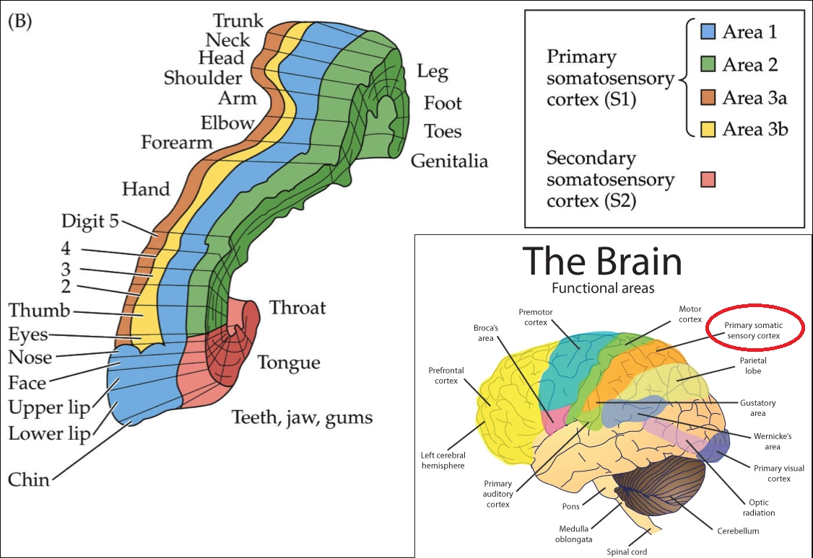

Neural Plasticity Problem
California State University, Northridge
2025-02-07
Previously Covered:
In This Section:

![]()